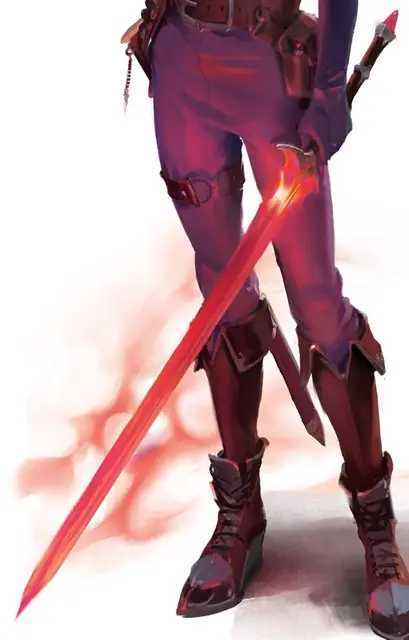

Непенте
Nepenthe
Оружие (длинный меч), легендарное (требуется настройка паладином)

Рекомендованная стоимость от 50 001 зм
Вы получаете бонус +3 бонуса к атакам и броскам урона, совершённым этим магическим оружием. Когда вы попадаете атакой по исчадию или нежити, оно дополнительно получает 2к10 урона излучением.
Пока вы держите обнаженный меч, он создает вокруг вас ауру радиусом 10 футов. Вы и все дружественные вам существа, находящиеся в ауре, получаете преимущество для спасбросков совершаемых против заклинаний и других магических эффектов. Если вы имеете 17 или более уровней в классе паладина, радиус ауры увеличивается до 30 футов.
Разум. Непенте - это разумное оружие нейтрально злого мировоззрения с Интеллектом 10, Мудростью 8 и Харизмой 18. Оно обладает слухом и тёмным зрение на расстоянии 60 футов. Оно умеет читать и понимает Эльфийский. Оно также может говорить на Эльфийском, но только голосом своего владельца, с которым меч может общаться с помощью телепатии.
Индивидуальность. За свою жизнь меч обезглавил тысячи преступников, не все из которых были виновны в преступлениях, за которые они были осуждены. Меч не может отличить виновного от невинного, и с каждым обезглавливанием он всё больше жаждет справедливости и крови. Меч развращен и неисправим.